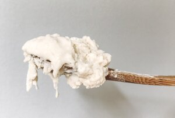

ⲕⲱⲃ B nn m, leaven: Mk 8 15 (var ϣⲉⲙⲏⲣ, S ⲑⲁⲃ) ζύμη, Va 69 122 ϣⲉⲙⲏⲣ ⲉⲧⲉⲡⲓⲕ. ⲡⲉ, K 14 خمير.ⲁⲧⲕ. adj, without leaven: Lev 23 6 (S ⲁⲑⲁⲃ), cf ib ⲁⲧϣⲉⲙⲏⲣ, Cat 171 (Lu 22) ⲁⲧⲕ., var ⲁⲧϣ. ἄζυμος.

| ⲁⲧⲕⲱⲃ B | (adjective)without leaven [αζυμος]445 | 99a | |||||||
ⲕⲱⲃ B nn m, leaven: Mk 8 15 (var ϣⲉⲙⲏⲣ, S ⲑⲁⲃ) ζύμη, Va 69 122 ϣⲉⲙⲏⲣ ⲉⲧⲉⲡⲓⲕ. ⲡⲉ, K 14 خمير.ⲁⲧⲕ. adj, without leaven: Lev 23 6 (S ⲁⲑⲁⲃ), cf ib ⲁⲧϣⲉⲙⲏⲣ, Cat 171 (Lu 22) ⲁⲧⲕ., var ⲁⲧϣ. ἄζυμος.
| view | ϣⲉⲙⲏⲣ B | (noun masculine) leaven [ζυμη]1923 |
| view | ⲥⲓⲣ, ⲥⲁⲉⲓⲣ, ⲥⲁⲉⲓⲣⲉ, ⲥⲏⲣⲉ S ⲥⲉⲉⲣⲉ A ⲥⲉⲓⲣⲉ L | (noun masculine) first milk (colostrum), butter [βουτυρον, στρυφαλις γαλακτος]1458 |
| view | ⲧⲱϩⲃ, ⲧⲁϩⲃ⸗, ⲧⲁϩⲃ† S | (verb) tr: moisten, soak1681 |
| view | ⲕⲱⲃ, {often} ⲕⲱⲡ {in B} SABF ⲕⲃ-, ⲕⲉⲃ- S ⲕⲟⲃ⸗ SB ⲕⲏⲃ† SABF | (verb) intr: be doubled [διπλους γινεσθαι]
tr: make double [διπλουν] qual: as adj [διπλοτερος, διπλασιος]479 |